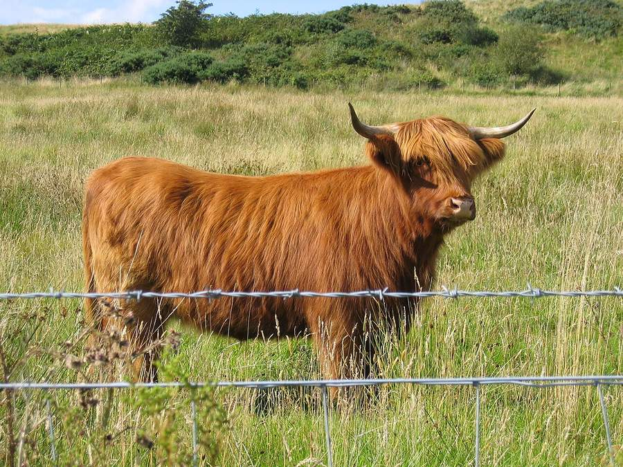
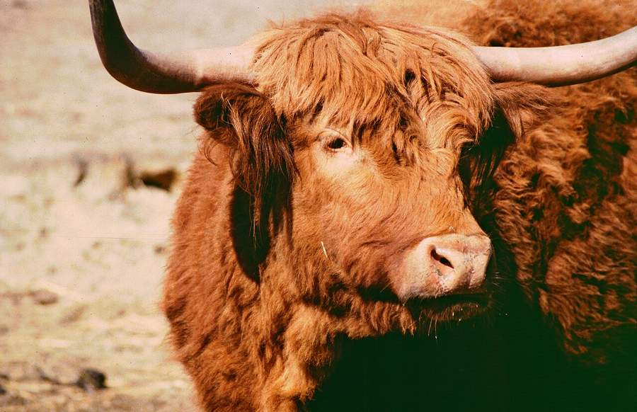
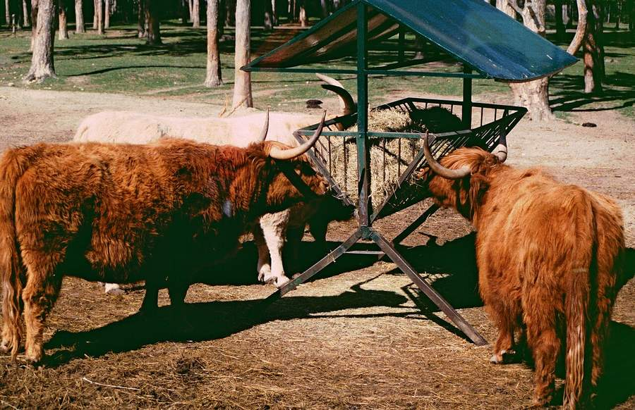

Introduction
The Highland is Scotland's ancient mountain breed — long shaggy hair, long horns and a fringe over the eyes called the 'dossan'.
Its double coat sheds rain and snow, so it lives outdoors all winter where other breeds need housing. The beef is lean and fine-flavoured.
Highland at a Glance
| Origin | Scottish Highlands & Western Isles |
|---|---|
| Type | Beef breed (cold country) |
| Dressing percentage | 55–60% carcass yield |
| Coat | Long double coat — red classic; black, brown and other colours |
| Special feature | The 'dossan' — a fringe over the eyes |
| Price (indicative) | US $1,500–3,500 per breeding animal |
Varieties & Types of Highland
Red is famous — but the breed wears many colours:
- Red — The classic postcard Highland — shaggy, horned and gentle.
- Black & Dark Brown — Just as pure — and just as hardy as the red form.
- Other colours — Dun, silver, yellow and brindle forms are also recognised.
Characteristics

- Long Horns — Long horns curving up — carried by cows and bulls alike.
- Shaggy Coat — Long outer hair over a soft, warm undercoat.
- The Dossan — The fringe over the eyes shields them from storms.
- Short Strong Legs — Short, strong legs for steep and rocky hills.
Strengths
- Lives outdoors all winter
- Lean, fine-flavoured beef
- Gentle despite long horns
- Great hill grazer
- Famous, lovable appearance
Keep in Mind
Highlands mature slowly and were bred for cold mountains — they are not a breed for hot lowland summers. Snow settles on the outer coat without melting, proof of its insulation.
Beef Production
Highlands dress out at 55–60% — lean beef, slow-grown on hills and prized for flavour. The thick coat insulates the animal, not fat.
The breed also clears rough hill grazing that other cattle will not touch, and it is a star of shows and small farms worldwide.
Price & Buying Tips
Typical price — international (indicative): US $1,500 – 3,500 — per breeding animal; pedigree stock costs more. All prices are indicative and move with the market.
Prices vary by country, pedigree and show quality. Hobby demand is strong and keeping costs are low; registered breeding females sit at the top of the range.
Before You Buy — Checklist
- Body frame & muscling
- Legs & hooves sound
- Breeding organs normal
- Teeth & age checked
- Body condition score 3+
- Vaccination & deworming record
- Temperament calm
- Weight on scale, not by eye
Photos of the Breed

Frequently Asked Questions
What colours are Highland cattle?
Red is the classic colour, but black, dark brown, dun, silver, yellow and brindle are all recognised — one hardy breed in many colours.
Can Highland cattle live outside in winter?
Yes — the double coat (long outer hair over a soft undercoat) sheds rain and snow, so they live outdoors all winter.
Are Highland cattle dangerous with those horns?
Despite the long horns they are known for a gentle temperament — but like all cattle, they should always be handled calmly and with respect.
What is the price of a Highland animal?
About US $1,500–3,500 per breeding animal (indicative); pedigree and show stock cost more.
Free Guide & Related Breeds
All 25 breeds — with bull, cow and calf photos, varieties, production charts and Urdu summaries — are in our free 196-page pictorial guide:
📖 Download the Free Cattle Breeds Guide (PDF)
Related breeds: Hereford · Ayrshire · Ankole-Watusi
⚠️ Important: Breed figures on this page are typical published ranges, and prices are indicative only — they change with the market, the animal's age, records and pregnancy status. Always inspect an animal in person (or with your veterinarian) before buying.
✍️ Written by Dr. Shahid Bilal Depal, DVM (PVMC RVMP #15068)
This guide is for educational purposes. Consult a registered veterinarian for diagnosis and treatment.